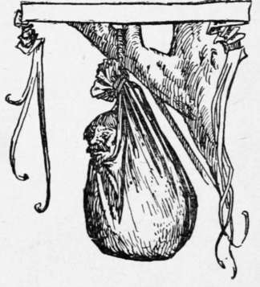

The Man In The Bag
Description
This section is from the book "Household Tales by Brothers Grimm", by Brothers Grimm. Also available from Amazon: Household Tales by Brothers Grimm.
The Man In The Bag
There were two brothers, who were both soldiers, the one had grown rich, but the other had had no luck, and was very poor. The poor man thought he would try to better himself; so pulling off his red coat, he became a gardener, and dug his ground well, and sowed turnips.
When the crop came up, there was one plant bigger than all the rest; and it kept getting larger and larger, and seemed as if it would never cease growing; so that it might have been called the prince of turnips, for there never was such a one seen before and never will again. At last it was so big that it filled a cart, and two oxen could hardly draw it; but the gardener did not know what in the world to do with it, nor whether it would be a blessing or a curse to him. One day he said to himself, "What shall I do with it? if I sell it, it will bring me no more than another would; and as for eating, the little turnips I am sure are better than this great one: the best thing perhaps that I can do will be to give it to the king, as a mark of my respect."
Then he yoked his oxen, and drew the turnip to the court, and gave it to the king. "What a wonderful thing ! " said the king. "I have seen many strange things in my life, but such a monster as this I never saw before. Where did you get the seed, or is it only your good luck ? If so, you are a true child of fortune."
" Ah, no! " answered the gardener, " I am no child of fortune; I am a poor soldier, who never yet could get enough to live upon: so I set to work, tilling the ground. I have a brother who is rich, and your majesty knows him well, and all the world knows him; but as I am poor, everybody forgets me."
Then the king took pity on him, and said, " You shall be poor no longer. I will give you so much, that you shall be even richer than your brother." So he gave him money, and lands, and flocks, and herds; and made him so rich, that his brother's wealth could not at all be compared with his.
When the brother heard of all this, and how a turnip had made the gardener so rich, he envied him sorely; and bethought himself how he could please the king and get the same good luck for himself. However, he thought he would manage more cleverly than his brother; so he got together a rich gift of jewels and fine horses for the king, thinking that he must have a much larger gift in return: for if his brother had so much given him for a turnip, what must his gift be worth ?
The king took the gift very graciously, and said he knew not what he could give in return more costly and wonderful than the great turnip; so the soldier was forced to put it into a cart, and drag it home with him. When he reached home, he knew not upon whom to vent his rage and envy; and at length wicked thoughts came into his head, and he sought to kill his brother.
So he hired some villains to murder him; and having shown them where to lie in ambush, he went to his brother, and said, "Dear brother, I have found a hidden treasure; let us go and dig it up, and share it between us." The other had no thought or fear of his brother's roguery: so they went out together; and as they were travelling along, the murderers rushed out upon him, bound him, and were going to hang him on a tree.
But whilst they were getting all ready, they heard the trampling of a horse afar off, which so frightened them that they pushed their prisoner neck and shoulders together into a sack, and swung him up by a cord to the tree; where they left him dangling, and ran away, meaning to come back and despatch him in the evening.
Meantime, however, he worked and worked away, till he had made a hole large enough to put out his head. When the horseman came up, he proved to be a student, a merry fellow, who was journeying along on his nag, and singing as he went. As soon as the man in the bag saw him passing under the tree, he cried out, " Good morning ! good morning to thee, my friend ! " The student looked about, and seeing no one, and not knowing where the voice came from, cried out, "Who calls me?"
Then the man in the bag cried out, " Lift up thine eyes, for behold here I sit in the sack of wisdom! Here have I, in a short time, learned great and wondrous things. Compared to what is taught in this seat, all the learning of the schools is as empty air. A little longer and I shall know all that man can know, and shall come forth wiser than the wisest of mankind. Here I discern the signs and motions of the heavens and the stars; the laws that control the winds; the number of the sands on the sea-shore; the healing of the sick; the virtues of all simples, of birds, and of precious stones. Wert thou but once here, my friend, thou wouldst soon feel the power of knowledge."
The student listened to all this, and wondered much. At last he said, " Blessed be the day and hour when I found you! cannot you let me into the sack for a little while ? " Then the other answered, as if very unwillingly, "A little space I may allow thee to sit here, if thou wilt reward me well and treat me kindly : but thou must tarry yet an hour below, till I have learnt some little matters that are yet unknown to me."
So the student sat himself down and waited awhile; but the time hung heavy upon him, and he begged hard that he might ascend forthwith, for his thirst of knowledge was very great. Then the other began to give way, and said, " Thou must let the bag of wisdom descend, by untying yonder cord, and then thou shalt enter." So the student let him down, opened the bag, and set him free. " Now then," cried he, "let me mount quickly! " As he began to put himself into the sack heels first, "Wait a while! " said the gardener, " that is not the way." Then he pushed him in head first, tied up the bag's mouth, and soon swung up the searcher after wisdom, dangling in the air. "How is it with thee, friend?" said he; "dost thou not feel that wisdom cometh unto thee? Rest there in peace, till thou art a wiser man than thou wert."
So saying, he borrowed the student's nag to ride home upon, and trotted off as fast as he could, for fear the villains should return; and he left the poor student to gather wisdom, till somebody should come and let him down, when he had found out in which posture he was wisest,—on his head or his heels.

Continue to:
Tags
fairy tales, children's stories, brothers grimm, household tales